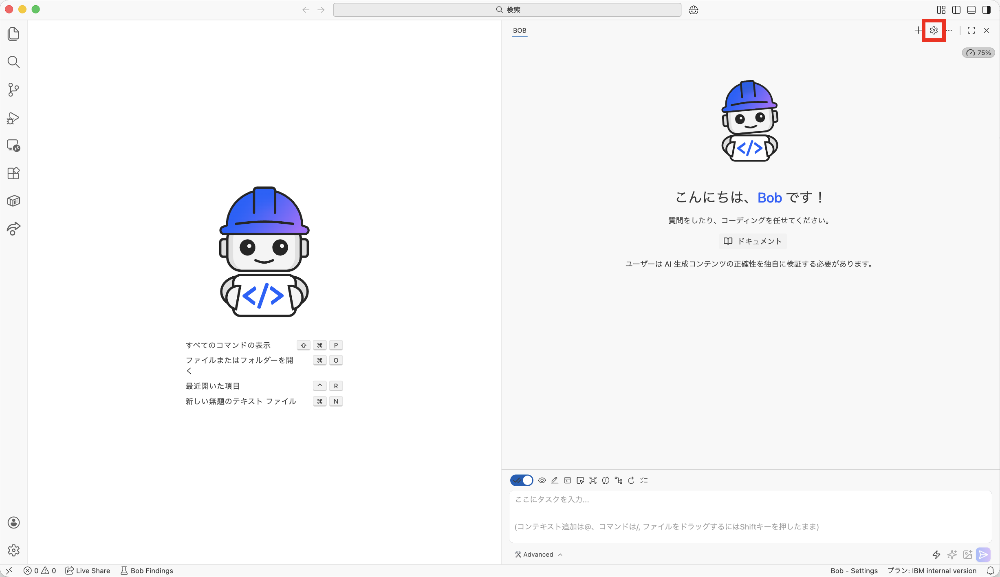
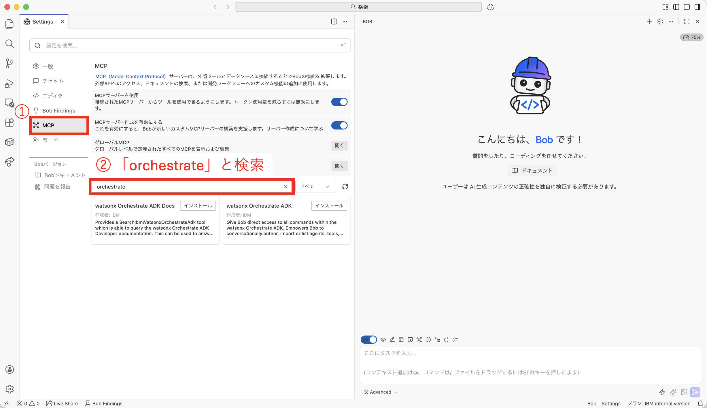
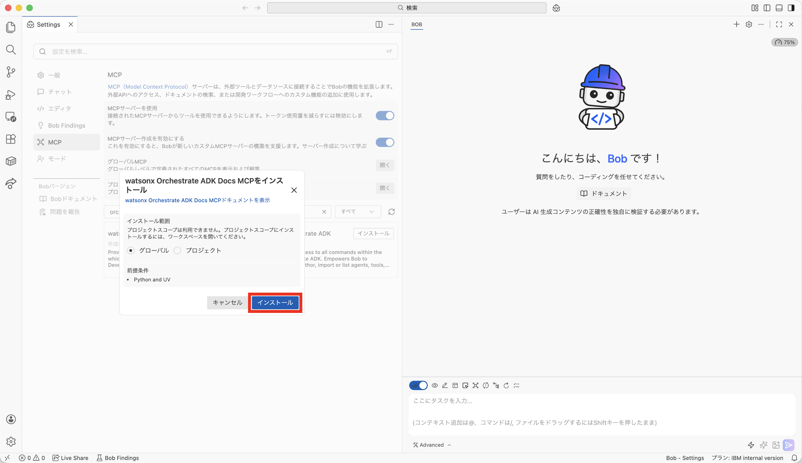
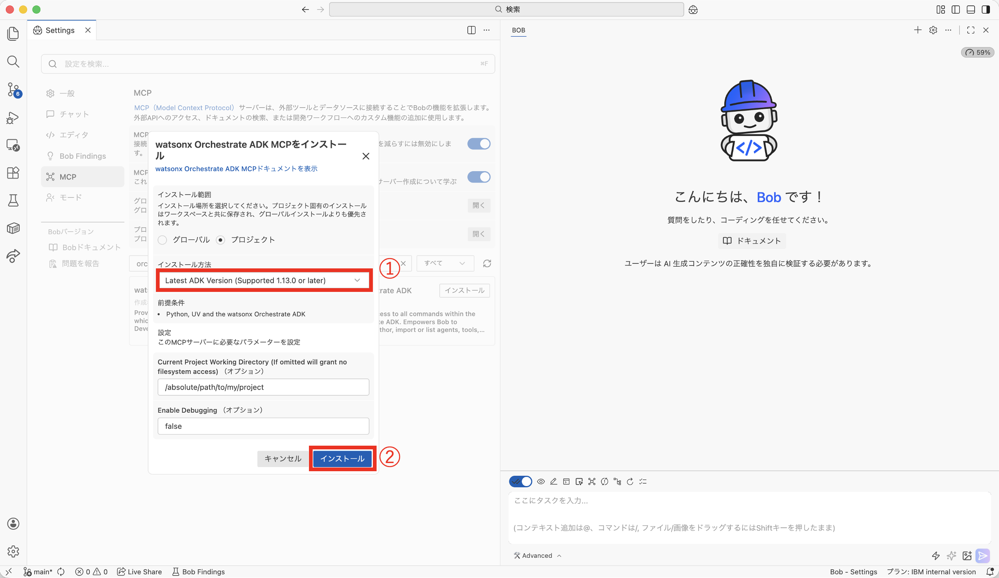

MCPとは
Model Context Protocol (MCP)は、AIモデルと外部ツール・システムを標準化された方法で接続するためのオープンプロトコルである。IBM BobはMCPをサポートしており、watsonx Orchestrateとシームレスに統合できる。
詳細情報: MCPの詳細については、公式ドキュメントを参照してください。
個別のMCPツールを有効または無効にする
BobでMCPサーバーを設定すると、そのサーバーが提供するすべてのツールがデフォルトで有効になる。
- Bobを起動して、右上の設定を開く
- ①「MCP」をクリック、②検索窓で「orchestrate」と検索して出てくる2つのMCPを接続する
- 「watsonx Orchestrate ADK Docs MCP」をインストール
- 「watsonx Orchestrate ADK MCP」をインストールする。「インストール方法」で「Latest ADK Version」を選び、インストール



